От Дeмерджи до моря пешком. Максимальные впечатления с минимальными затратами.
Место на картеЛюбителям активного отдыха и квестов в духе туристических маршрутов есть шанс ощутить всю прелесть живописной, местами нетронутой крымской природы. Вот так мы решили отправиться в пеший поход по крымским горам. Естественно, к таким вылазкам следует хорошо подготовиться заранее, иметь необходимый минимум снаряжения, провизии и хотя бы одного опытного участника. Пользоваться уже известными маршрутами, продумать свой путь с учетом возможных ситуаций.
Прибыв ранним утром на вокзал Симферополя, мы сели на троллейбус(кстати, впервые пользовался этим видом транспорта в целях междугородних поездок!) и отправились до пункта "Перевальное". Уже с трассы открывались неплохие виды на горы "Чатыр-Даг" и "Демерджи".
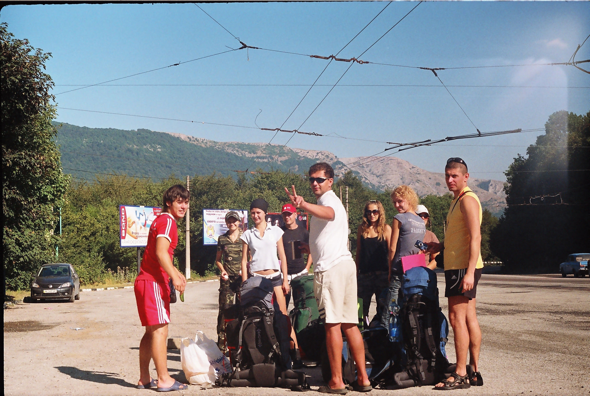Начало пути и нам предстоит одолеть самую высшую точку нашего маршрута - южная Демерджи, 1239м над уровнем моря. С непривычки некоторые теряют настроение, но наверху открывается захватывающий пейзаж, и все хватаются за фотокамеры.
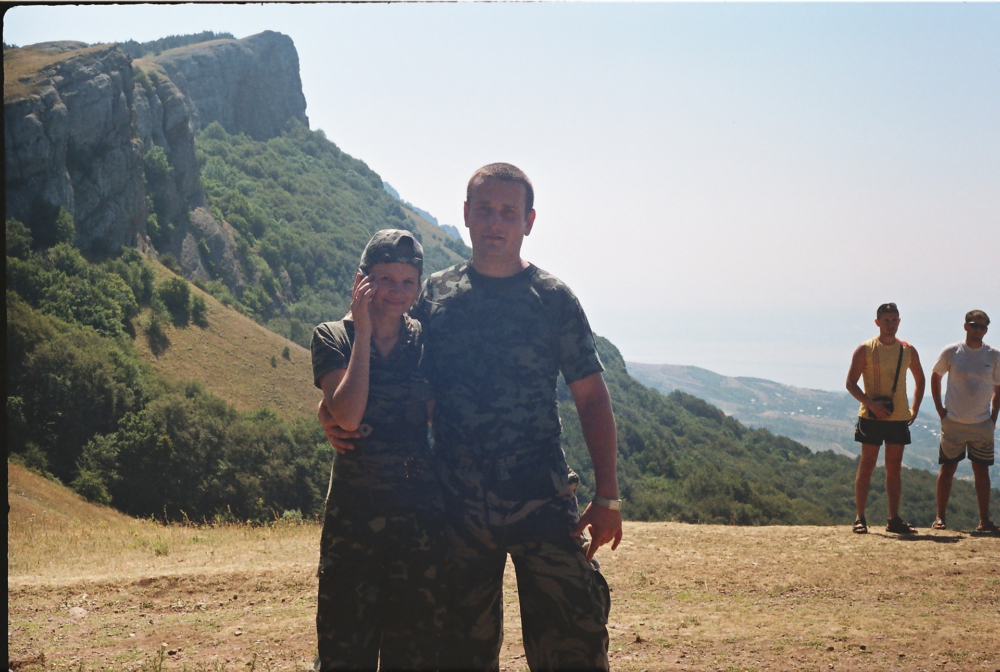Все очень устали но предстоит еще долгий путь, прежде чем разбивать лагерь.
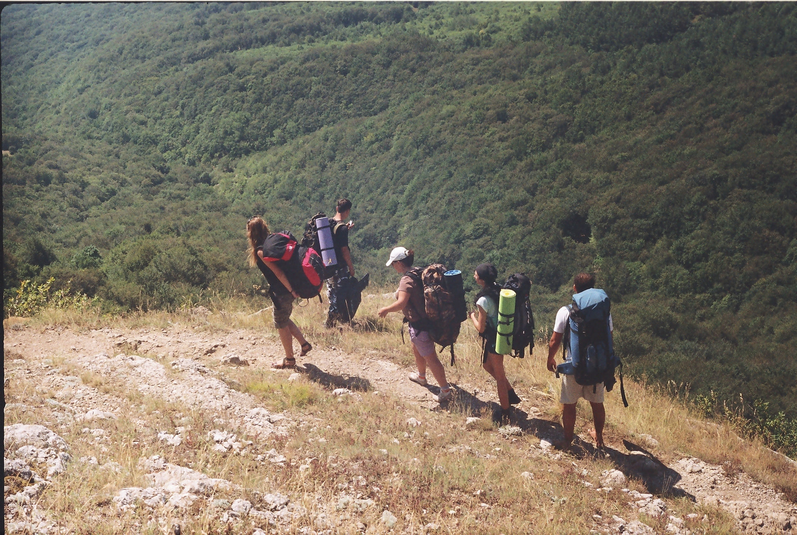Чисто символично решили посетить отметку высоты, иначе личный рекорд не будет засчитан )).
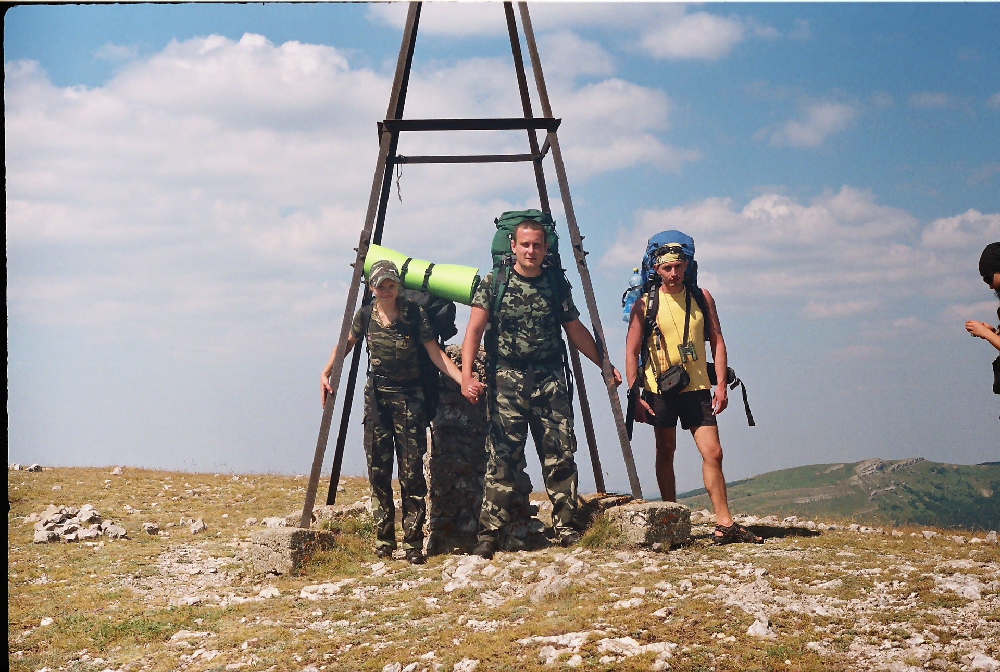Далее открывается взору "Долина привидений", горные поляны со своим климатом. Палящее солнце сменяется "шотландским" колоритом, падает температура, чувствуется приятная влажность.
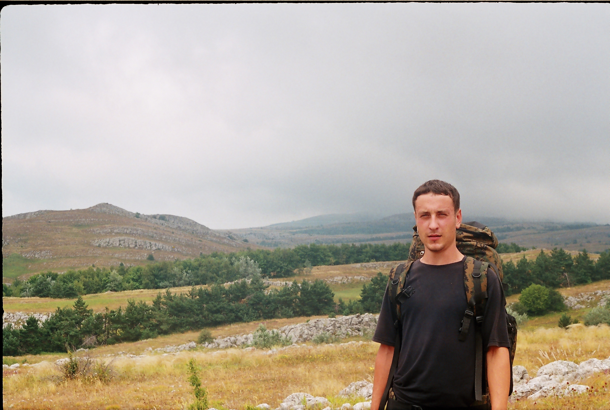Еще немного пейзажей к концу первого походного дня. Здесь вполне можно было снимать фильмы из серии "Властелина колец", по крайней мере мне так показалось.
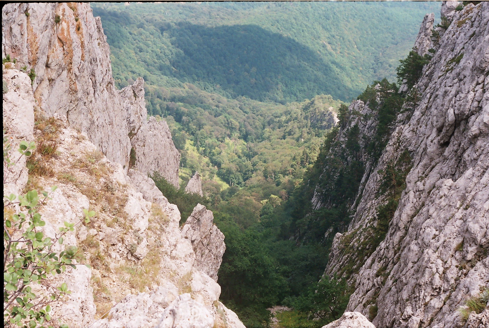Ночевка вблизи источника "Чабан-чакрак" и вот мы уже спускаемся. Обеденный привал на пути к Хапхальскому заповеднику.
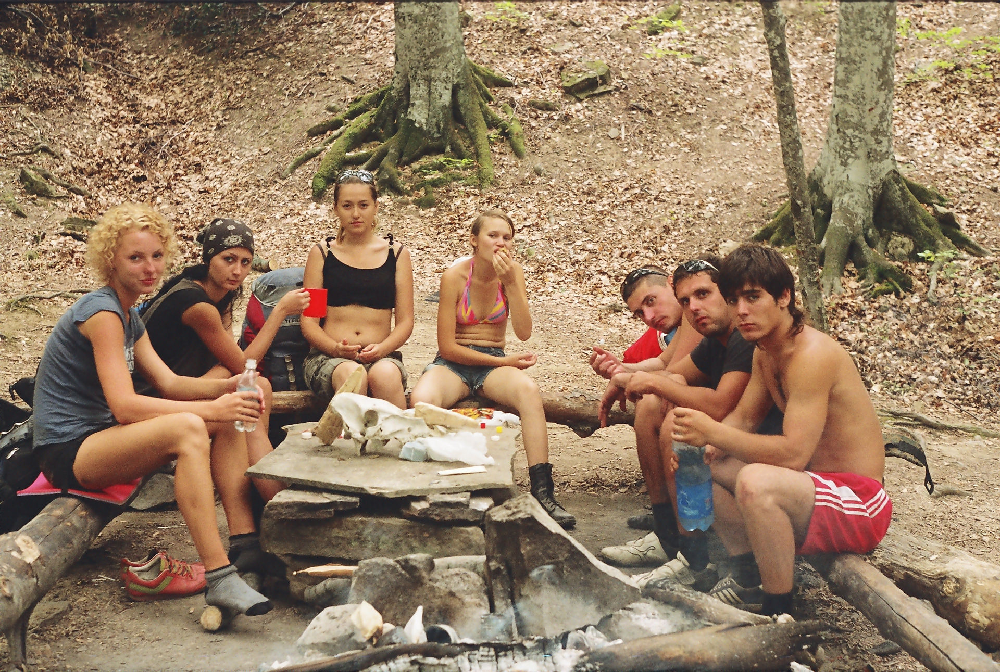Как оказалось спускаться ничуть не легче, а порой даже тяжелее чем подниматься. Долгий путь к холодному водопаду вдоль горного ручья.
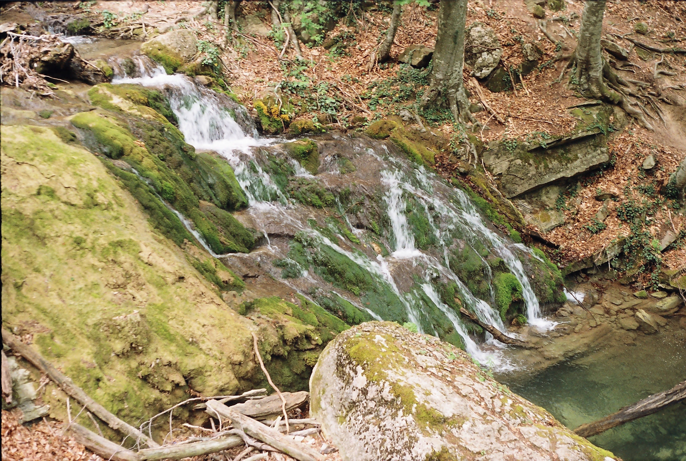Водопад "Джур-джур" хорошо бодрит по утрам. Особенно после бурной ночки)).
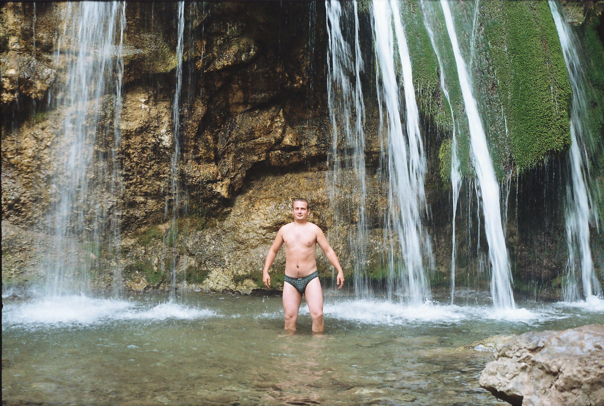Много деталей я упустил из стоянки на "Ай-алекси", именно там мы задержались в поисках пещер на плоскогорье.
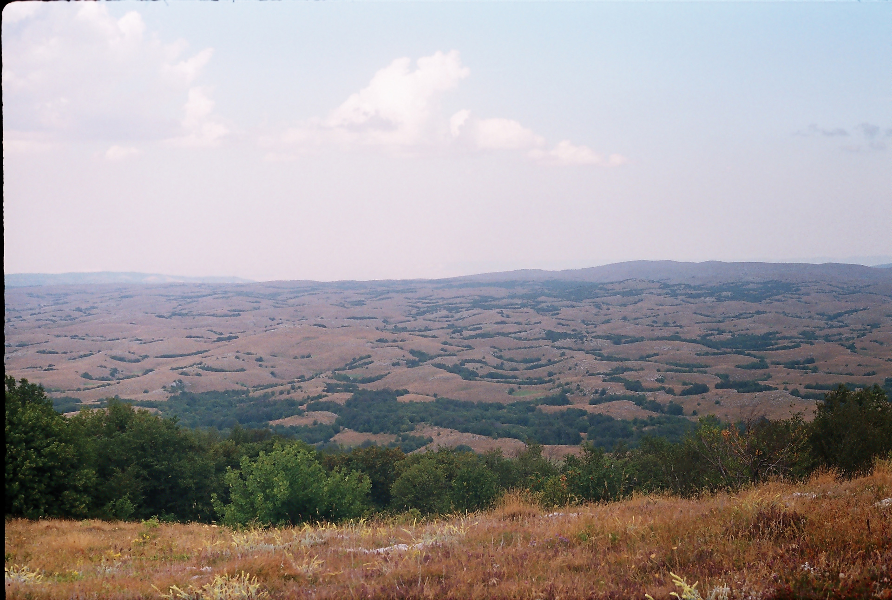Чигинитра, а далее вид на "Малые ворота". Нам пришлось остановиться на ночлег на этом, довольно крутом перевале. От постоянного ветра здесь даже деревья растут с изгибом в одну сторону. Ночью нас забавляли крики хищных птиц и неожиданные шорохи диких животных.
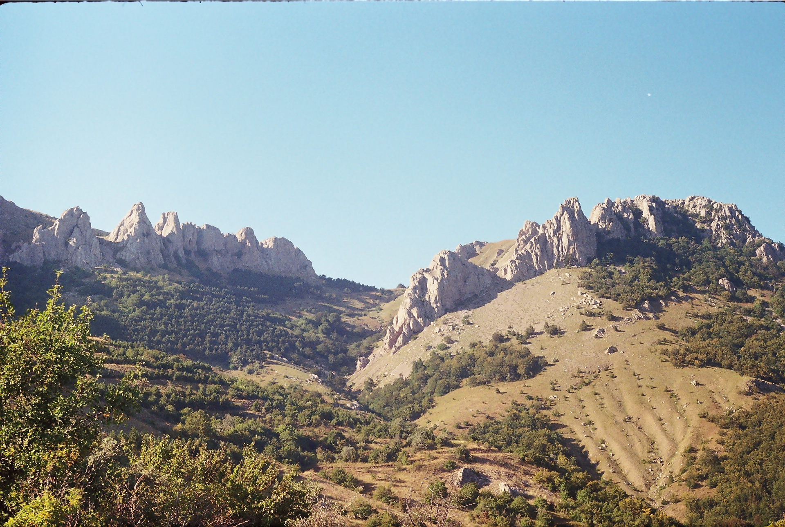Должен признаться, коллектив нашей "экспедиции" состоял из тематически настроеных участников, многие проходили подобную практику по университетской программе. Естественно, вечера мы проводили у костра, под гитару и спиртное. В ночь на перевале мы просто легли спать, поужинав сухпайком.
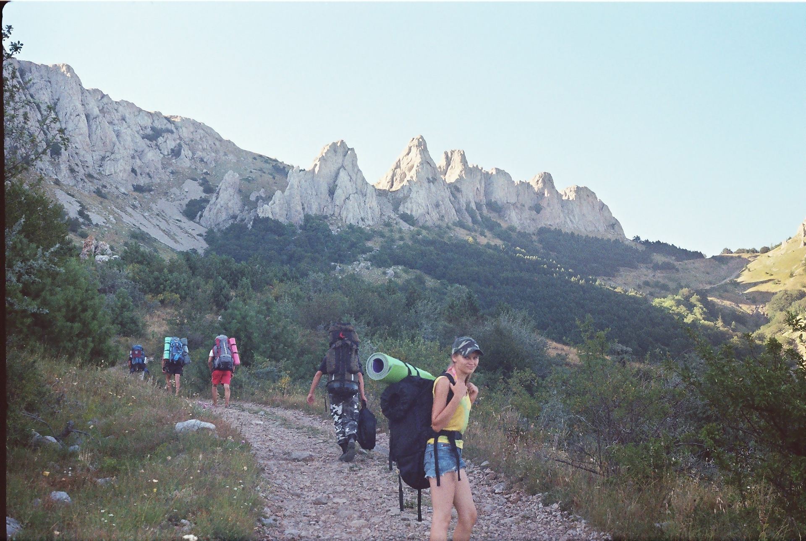Это была последняя ночевка в горах. На следующий день мы заблудились, на исходе была питевая вода, пришлось проделать бессмысленный лишний путь пока не набрели на шоссе. Еще несколько километров по асфальту и показался населенный пункт. Пополнив запас питьевой воды, мы решили взять курс к морю, так как лишний привал оказался так же бессмысленным.
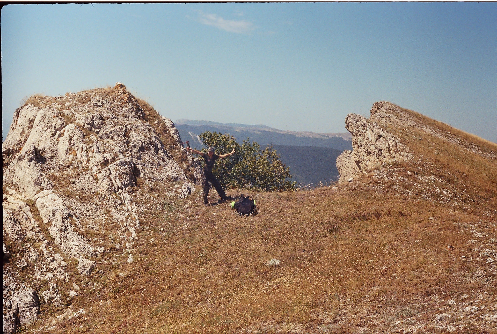Дальнейший путь лежал через виноградники. Там имел место каламбурный эпизод с одним охранником местного хозяйства, который угостил нас водой и виноградом. Вообще, есть некая традиция в таких квестах, негласные правила приветствовать встречных путников, помогать друг другу и оказывать приветливое отношение. Люди в дороге постоянно попадаются добрые и отзывчивые, настроенные на позитив. Еще долго после похода я скучал по той атмосфере, казалось, я покинул "другую" страну.
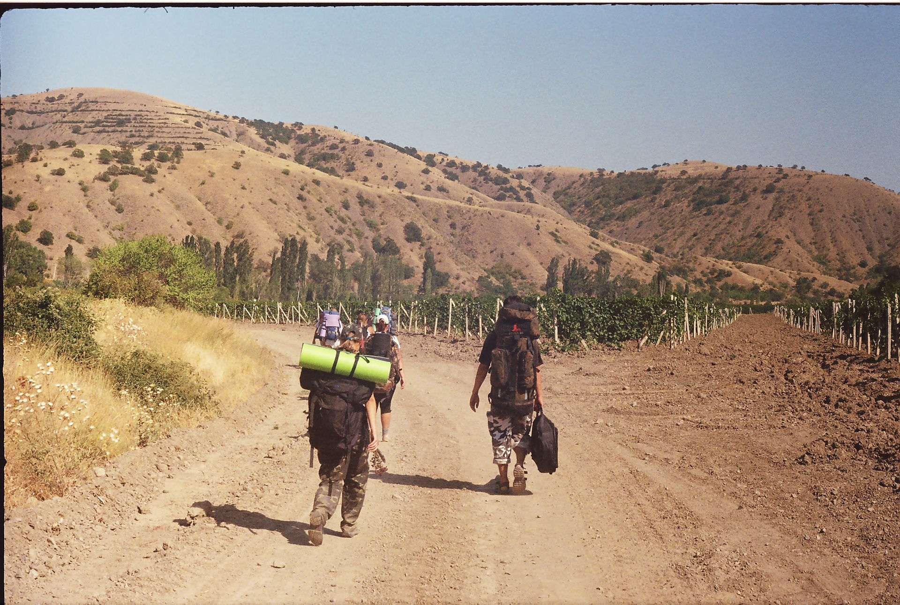Но вот, конец дня, мы вышли в пос. Морское и устроились на диком пляже, недалеко от прибрежной трассы, практически у моря. А дальше ночь при полной луне, гитара у костра, прогулки по берегу и конечно - романтика!
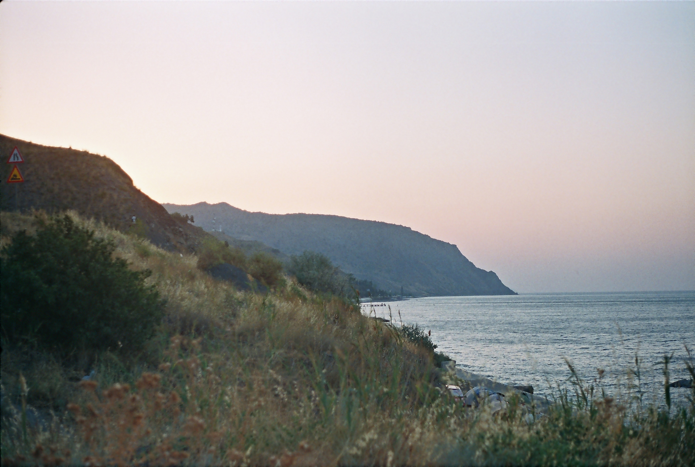Утром мы уже собиралсиь в обратный путь, но уже на автобусе, до Симферополя. Ночь в поезде и нас встречал суетливый Харьков. Из всех поездок к морю эта - оставила самые теплые воспоминания и яркий букет ощущений. Единственное - было невыносимо трудно прощаться с тем летом...
Только зарегистрированные пользователи могут публиковать свою информацию на этом сайте.